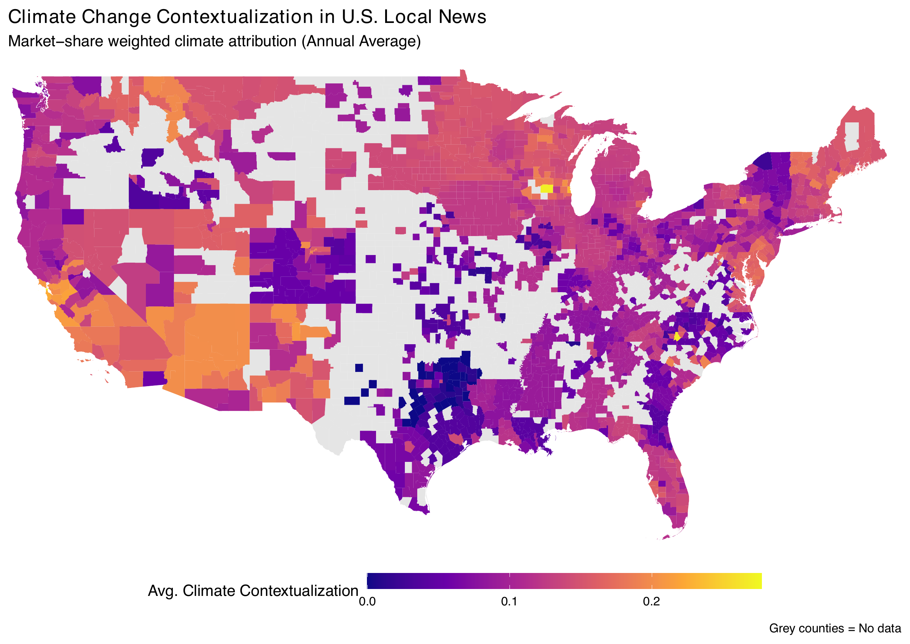
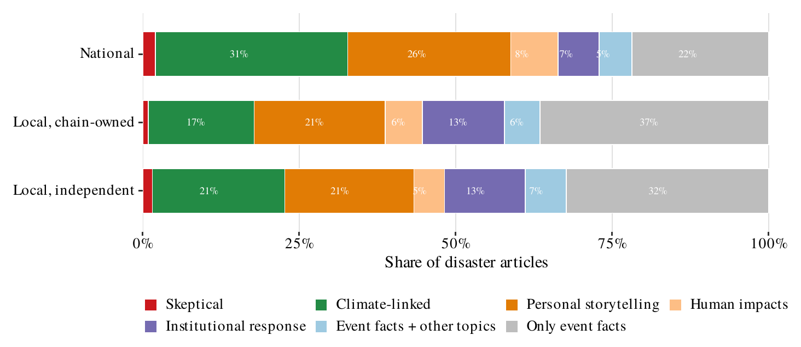
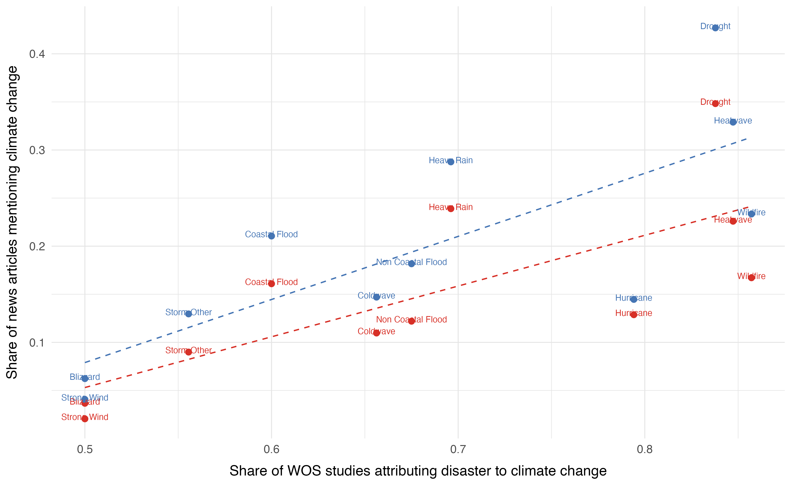
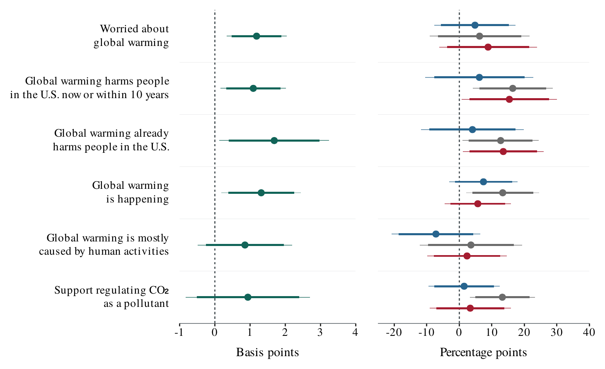
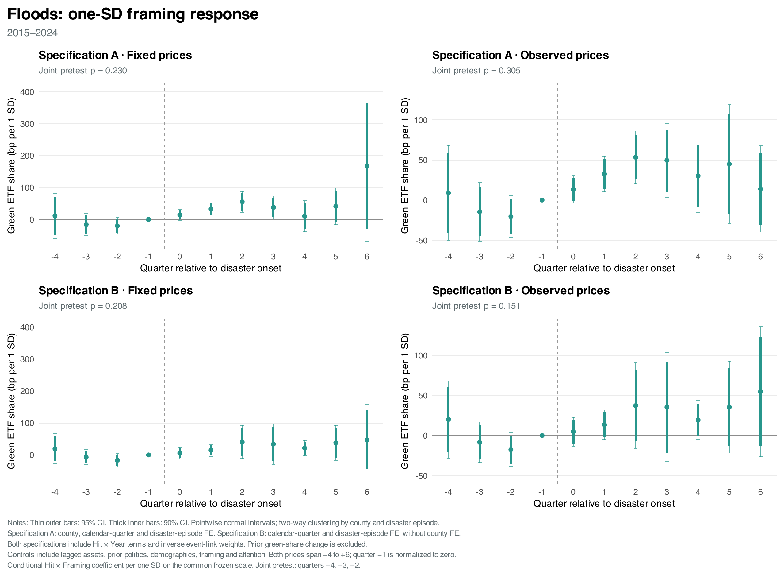
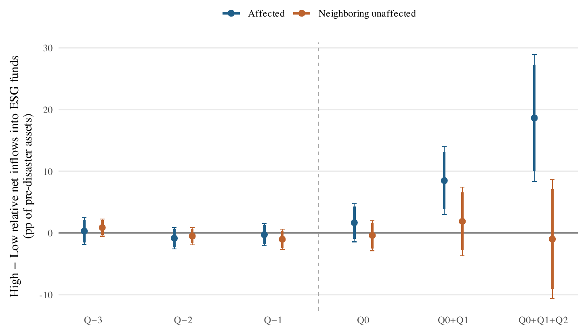
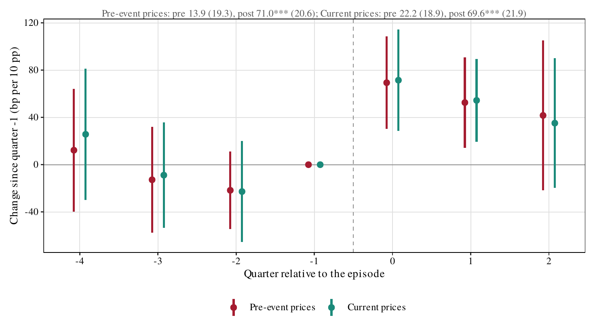
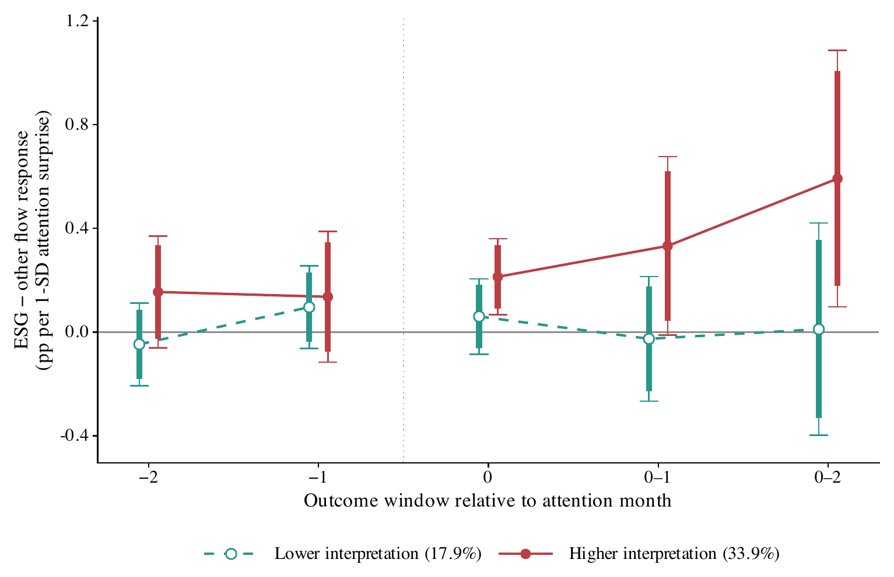

Ph.D. Candidate in Economics, Harvard University
I am a Ph.D. candidate in Economics at Harvard University. My research lies at the intersection of behavioral economics, climate finance, and the economics of information and attention. I study how investors reason about and interpret events, and how those interpretations shape investment decisions and asset prices.
I am on the 2026–2027 academic job market.
Before Harvard, I earned a B.Sc. and an M.Sc. in Economic and Social Sciences from Bocconi University.
Outside of research, I take contemporary voice lessons and sing, box, and run, and I am always happy to talk about any of the three.
Latest version · Online Appendix
How does the interpretation of an event shape portfolio responses, flows, and prices? Using large language models fine-tuned to classify 1.5 million articles from U.S. news outlets, I construct a novel measure of local interpretation that separates the attention a disaster receives from whether the event is framed as a manifestation of climate change. Among disaster-affected counties, stronger climate interpretation leads to reallocation toward green ETFs by household-serving advisers, about 20% of pre-event green-ETF holdings per ten percentage points over two quarters. The relationship extends to ESG mutual-fund inflows, as well as to nearby fund managers, who tilt their active trading toward greener firms as climate-linked coverage rises. Predetermined county and investor characteristics and the direct economic effects of the disaster are not driving the responses. To separate local interpretation narratives from investors’ own prior beliefs, I use supply-side variation in interpretation, driven by changes in the ownership structure of local outlets: under a larger chain ownership, the climate-interpreted share of local disaster coverage is lower, and the local response toward sustainable assets attenuated. At the aggregate level, stronger climate interpretation of national disaster coverage is associated with higher flows into ESG funds. If a year’s disasters drew the attention of the entire institutional investor base, an interquartile increase in climate interpretation would imply appreciation of green stocks of up to 15% of the observed annual green return spread.
News and beliefs




Advisers’ green ETF holdings

ESG fund flows

Fund managers

National flows

Teaching Fellow, Harvard University